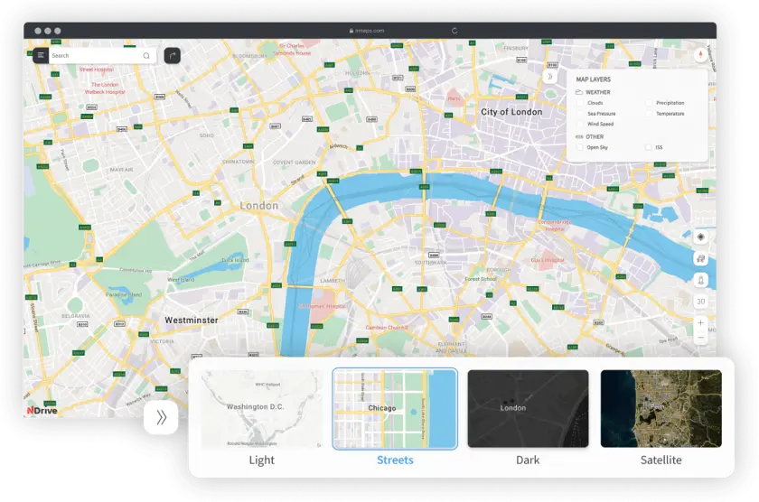

Multi-Layered
customizable
Maps
Tailor your geo information to suit your
company’s daily operations. Weather
info, road conditions,
fleet localization,
brick-and-mortar businesses details,
you decide what to see.

 


